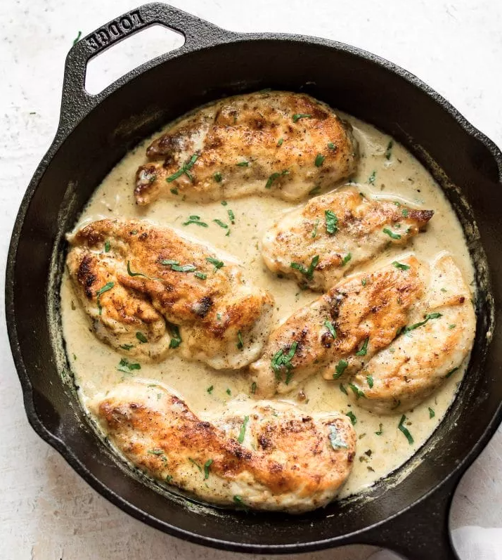
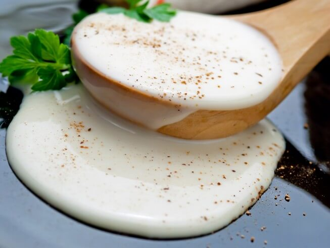

Creamy Chicken in White Wine Sauce
Published: Feb 13, 2019
This creamy white wine chicken is easy enough to make on a weeknight but good
enough for company! Ready in only 30 minutes.

This would make a fab date night meal. In fact, it's perfect with Valentine's Day coming up tomorrow if you're looking
for an idea. Make it even if you're single. Why the heck not?
Serve it over pasta or with mashed or roasted potatoes.
For a vegetable I'd steam some broccolini, carrots, or even serve sweet corn with it. Or make a light salad to offset
that cream.
INGREDIENTS
- 2 large chicken breasts cut in half lengthwise
- Salt & pepper to taste
- 1/4 teaspoon garlic powder
- Flour for dredging
- 1 tablespoon olive oil
- 3 tablespoons butter divided
- 1/2 cup dry white wine
- 1/3 cup chicken broth
- 1 pinch Herbs de Provence (or Italian seasoning)
- 1/2 cup heavy/whipping cream

INSTRUCTIONS
- Cut your chicken breasts in half lengthwise to make 4 thinner cutlets.
Sprinkle them with salt and pepper and garlic powder, then dredge them in
flour so they're nicely coated.
- Add the olive oil and 1 tablespoon of the butter to a skillet over medium-high
heat. Once the pan is hot, add the chicken and cook for 4-5 minutes/side
until golden. Take the chicken out of the pan and set aside (chicken
shouldn't be fully cooked yet).
- Add the wine and chicken broth to the pan and let it bubble for about a
minute. Stir to scrape up any bits from the bottom of the pan.
- Add the remaining butter and the Herbs de Provence to the pan, and
continue simmering for another 2 minutes.
- Add the cream and chicken back into the pan. Reduce the heat to medium
and cook for another 5 minutes or until the chicken is cooked through and
the sauce has thickened up a bit. Season with extra salt & pepper if needed.